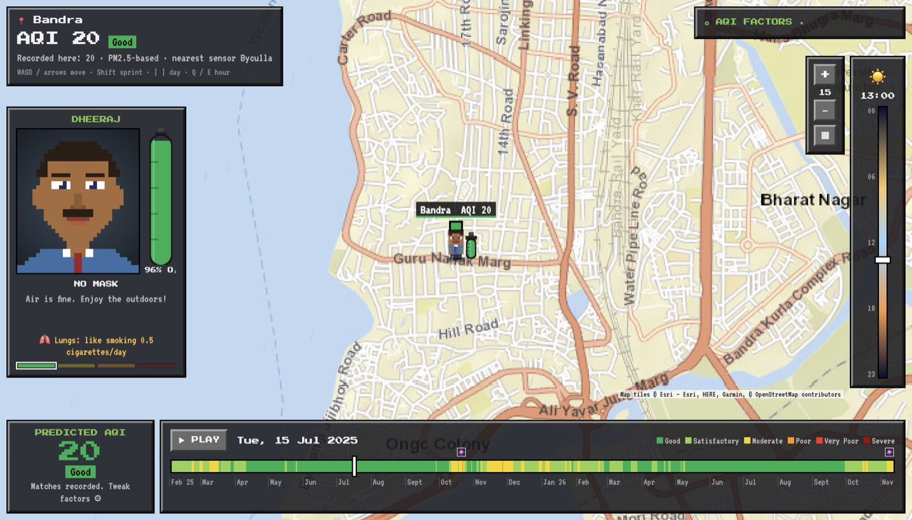
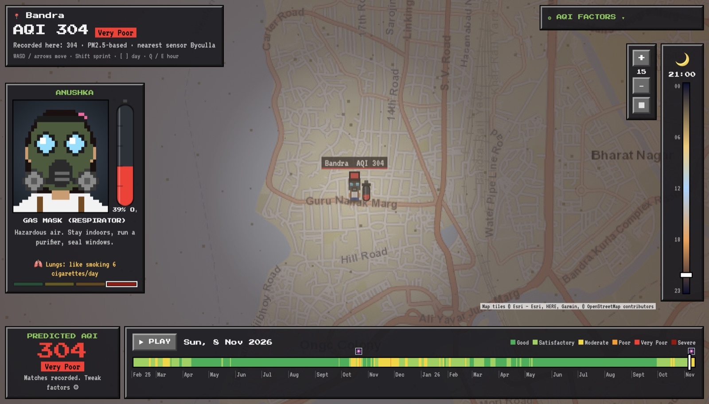
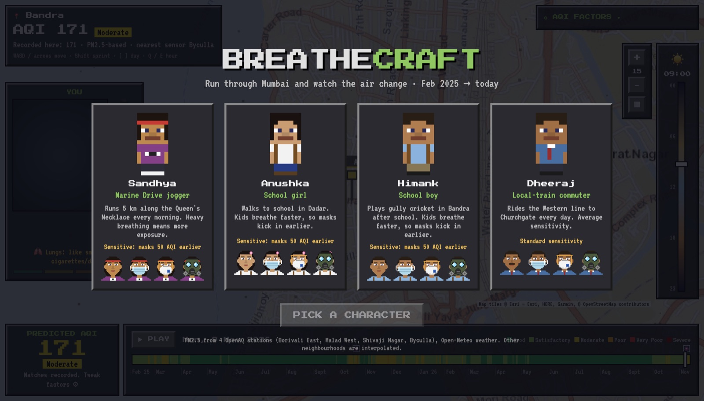
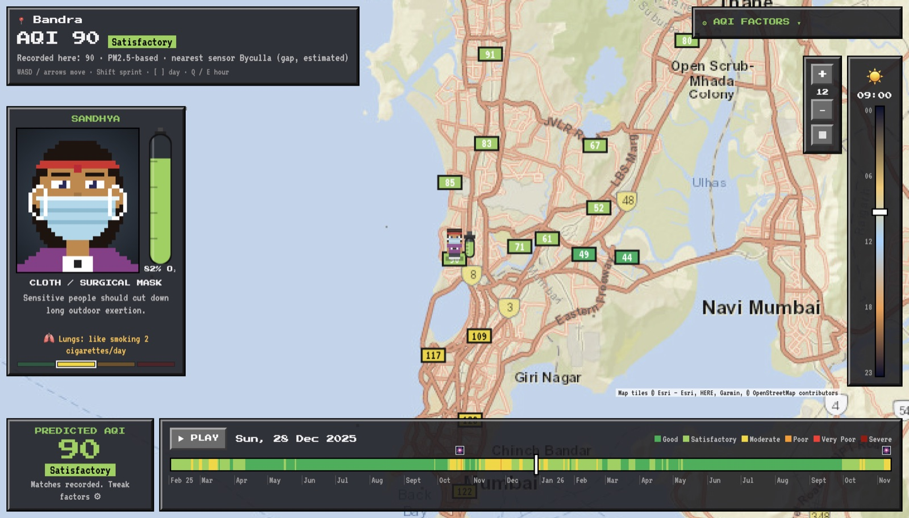

Creative Prize · Google Mumbai Data Challenge: Air Quality Mapping & Forecasting
BREATHECRAFT MUMBAI
A Minecraft-style walk through Mumbai's air, Feb 2025 → today
by Anushka Singh & Sandhya Singh
An AQI of 304 is just a number. BreatheCraft turns it into something you can see and feel. You walk your character through the real streets of Mumbai, and as the air gets worse the sky hazes over, your character puts on a mask, and an oxygen tank drains.
Same street, two days

15 Jul 2025, 1 pm · Bandra · AQI 20 (Good). No mask, oxygen tank 96%, like smoking 0.5 cigarettes a day.

8 Nov 2026, Diwali, 9 pm · Bandra · AQI 304 (Very Poor). Gas mask, tank 39%, about 6 cigarettes a day, brown smog over the map.
How you play
1
Pick a characterSandhya (runner), Anushka (girl), Himank (boy) or Dheeraj (commuter). Kids and runners are more sensitive, so their masks come on 50 AQI points earlier.
2
Walk real MumbaiMove with WASD over a pixelated city map. Zoom from street level to the whole city. 18 signposts show each area's AQI.
3
Travel in timeDrag the date timeline (coloured by daily AQI) and the time-of-day rail, or press Play for a day-by-day time-lapse.
4
Ask “what if?”Move sliders for temperature, rain, wind, humidity, traffic, construction and firecrackers to see the Predicted AQI change.
What the AQI does to you
AQI*
Category
Your character wears
Advice shown
0–100
Good / Satisfactory
No mask
Enjoy the outdoors
101–200
Moderate
Cloth / surgical mask
Cut down long outdoor exertion
201–300
Poor
N95 respirator
Wear an N95, avoid outdoor exercise
301+
Very Poor / Severe
Gas mask
Stay indoors, run a purifier
*For Dheeraj. For Sandhya, Anushka and Himank, each step comes 50 points earlier. The oxygen tank shows how much clean air is left for the lungs, and the cigarette line uses the rule of thumb that 22 µg/m³ of PM2.5 for a day ≈ 1 cigarette.

Character select. Each card previews all four masks for that character.

Zoomed out. The AQI signposts show how air differs across neighbourhoods at the same hour.
Built on the challenge data
Hourly PM2.5 from the challenge's 4 OpenAQ stations: Borivali East, Malad West, Shivaji Nagar and Byculla (Feb 2025 – Nov 2026).
Converted to India's CPCB AQI using the PM2.5 scale and colours.
The AQI anywhere on the map is a distance-weighted blend of the 4 stations.
Weather (temperature, rain, wind) from Open-Meteo sets each hour's starting conditions.
Hours with no reading are filled with typical values for that month and hour, and labelled “estimated” in the game.
The “what if” model
The firecracker effect is learned from the data: on Diwali nights, PM2.5 runs about 1.6× higher (fitted on 13,153 station-hours).
Rain and wind clean the air, while traffic, construction and cool, humid air make it worse. These strengths are set by hand to sensible values, because in the raw data they get mixed up with the seasons.
With the sliders untouched, Predicted AQI equals the recorded value. It is a scenario tool, not a forecast.
Moments to try
Diwali nights (20 Oct 2025, 8 Nov 2026): the AQI jumps into Very Poor and Severe, and the masks go on.
Monsoon (Jun–Sep): the cleanest stretch of the year, with no masks.
Winter (Nov–Jan): the most Moderate days. Try turning rain up on one.
Your neighbourhood: zoom in and walk home.
Try it
Open game/index.html in a desktop browser. There's nothing to install. It needs internet for the map.
Plain HTML + JavaScript, and the map is a real street map drawn pixelated.
Demo link: index.html?char=1&day=645&hour=21 opens Diwali night as Anushka.
Limits
There are only 4 real sensors, so the rest of the city is interpolated. Humidity, traffic and construction are stand-ins, not measurements.
What's next
📡 Live dataConnect to live AQI feeds so the game shows the air in Mumbai right now, not just past readings.
🌦 More data sourcesAdd more weather (humidity, wind direction, live forecasts) and real traffic, construction and sensor data from more stations.
🎮 A real gameTurn the explorer into an interactive game experience, with missions and a score for the air you breathe.
📱 Phone versionThe game currently runs on desktop only. Next step: optimise it for phones with touch controls and a mobile layout.